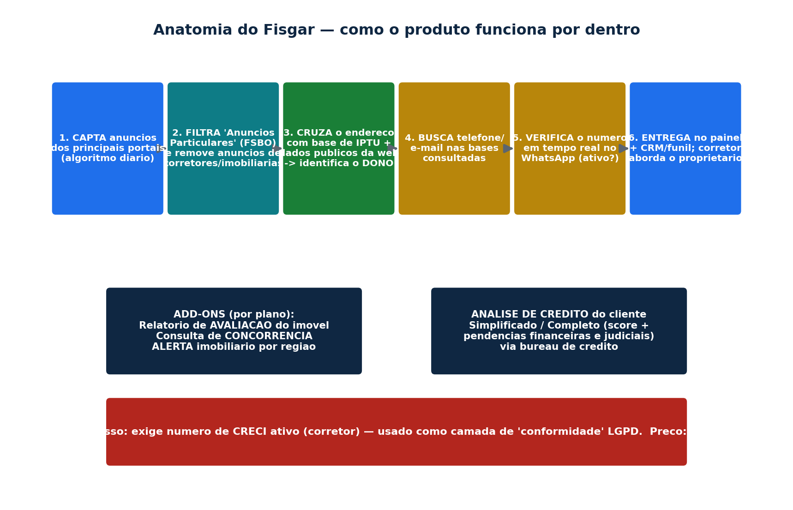
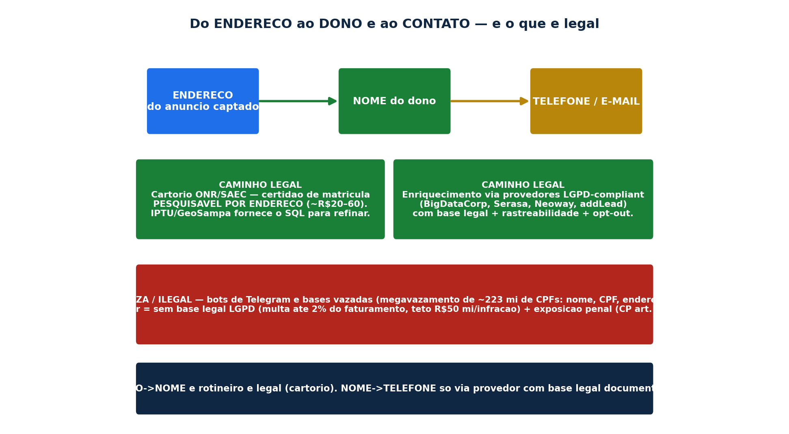
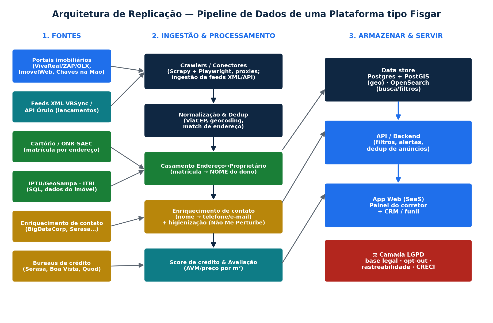
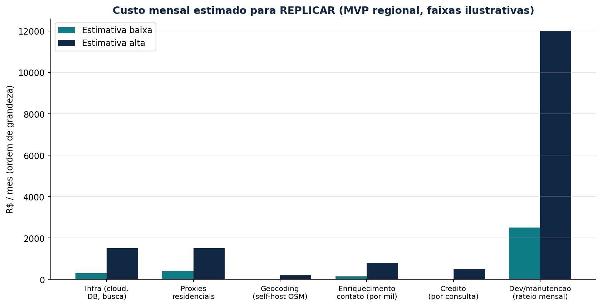

Desmontagem completa de uma plataforma brasileira de prospecção imobiliária que liga anúncio → endereço → proprietário → contato, com o mapa de fontes de dados, a arquitetura de replicação, os custos e os limites legais (LGPD).
O que é. A Fisgar (Fisgar Tecnologia da Informação Ltda, CNPJ 36.931.430/0001-74, Campinas-SP, fundada em 2020) é um SaaS de prospecção para corretores de imóveis. Ela agrega anúncios dos principais portais imobiliários e, no seu recurso-âncora, identifica o proprietário do imóvel e o contato dele (telefone/e-mail) a partir do endereço do anúncio, para o corretor abordar diretamente quem anuncia por conta própria (FSBO — for sale by owner). Inclui ainda CRM, relatório de avaliação, consulta de concorrência, alertas e análise de crédito. Preço: R$ 227–287/mês; exige CRECI ativo.
Como replicar (resumo). Crawlers/feeds dos portais → normalização e geocoding → casamento endereço↔proprietário (via matrícula de cartório e/ou IPTU) → enriquecimento de contato por provedor com base legal → score de crédito e avaliação → banco geoespacial + busca → app/CRM. Custo de um MVP regional na casa de R$ 4–18 mil/mês somando infra, proxies, enriquecimento e desenvolvimento. O fator decisivo é conformidade: o caminho legal existe (cartório + enriquecimento rastreável + opt-out), o atalho ilegal (bases vazadas/Telegram) expõe a multas da ANPD (até 2% do faturamento, teto R$ 50 mi) e a crimes do Código Penal.

Figura 1 — Fluxo interno reconstruído do Fisgar, do anúncio captado até a abordagem do proprietário.
| Item | Detalhe |
|---|---|
| Razão social / CNPJ | Fisgar Tecnologia da Informação Ltda — 36.931.430/0001-74 |
| Sede / fundação | Cambuí, Campinas-SP — constituída em 14/04/2020 (domínio de 2019) |
| Sócios | Tiago Penteado Moretzsohn de Castro (administrador); Nuri Eftekhari (desde 2022) |
| Porte / capital | Microempresa; capital social R$ 1.000; sem rodadas de investimento |
| Acesso / stack | Apenas web (painel.fisgar.com.br, CRM em /crm); Cloudflare + PHP; sem app, sem API pública |
| Preço | Plano A: R$ 227/mês (ou R$ 2.724/ano); Plano B: R$ 287/mês (ou R$ 3.444/ano) |
| Pré-requisito | Número de CRECI ativo (ou autorização de imobiliária) para assinar — usado como camada de "conformidade" LGPD |
| Módulo | O que faz |
|---|---|
| Captação de imóveis | Reúne os anúncios "das principais plataformas" numa base única, filtrável; algoritmo insere novos e remove os vendidos/retirados (atualização diária). |
| Pesquisa por proprietários núcleo | Filtro "Anúncios Particulares" mostra só anúncios postados pelo próprio dono (FSBO) com o contato; também permite buscar diretamente pelo proprietário. |
| Consulta de concorrência | Mostra anúncios/imobiliárias concorrentes atuando numa região. |
| Alerta imobiliário | Notifica quando surgem novos anúncios na região-alvo do corretor. |
| Relatório de avaliação | Gera um laudo de avaliação do imóvel (PTAM simplificado) para apresentar ao dono, combinando dados da plataforma com inputs do corretor. |
| Análise de crédito | Relatório do cliente em versão Simplificada e Completa (score + pendências financeiras e judiciais) — via bureau de crédito. |
| CRM / funil | Pipeline de captação, atividades (data/hora/prioridade), clique-para-WhatsApp e e-mail; painel próprio. |
Concorrentes: Captei (marketing de "maior base de proprietários do Brasil", origem IPTU, agentes de IA que abordam no WhatsApp, moeda interna "CapCoin") e Alude (bot que varre a web por donos anunciando na sua região). Equivalente europeu do nicho FSBO: CASAFARI.
O produto é, na prática, a soma de quatro pipelines de dados. Vamos a cada um — o que a Fisgar faz, qual a fonte provável, e como obter o mesmo de forma legítima.
A Fisgar diz captar "os melhores anúncios das principais plataformas" e atualizá-los diariamente, sem nomeá-las. O mercado é dominado pelo Grupo OLX (que fundiu ZAP + Viva Real e comprou o Grupo ZAP, aprovado pelo CADE em 2020), além de ImovelWeb e Chaves na Mão. Há três formas de obter esse inventário:
| Via | Como é | Legalidade |
|---|---|---|
| Feed XML VRSync (oficial) | Padrão de-facto do Grupo OLX: o CRM da imobiliária publica um XML (elementos Listing/Details: preço, IPTU, área, quartos, localização) que o portal ingere a cada ~12h. Serve para publicar seu próprio estoque, não para baixar o dos concorrentes. | Legal (é o canal oficial) |
| API Órulo (lançamentos) | API autenticada (Client ID/Secret + token, webhooks, campo updated_at) para consumir catálogo de imóveis novos. O caso mais "limpo" de compartilhamento sancionado. | Legal (com contrato) |
| Scraping dos portais | Como não há API oficial para ler anúncios de terceiros, agregadores recorrem a scraping. Os portais protegem com Cloudflare/DataDome, exigem JS e fazem fingerprint TLS (devolvem 403 a clientes simples). Ferramentas: Scrapy + Playwright, proxies residenciais. | Cinza: não é crime por si, mas viola ToS e pode gerar concorrência desleal (LPI art. 195) e LGPD se capturar dado pessoal |
Jurídico do scraping no Brasil: não há lei que o criminalize, mas a responsabilidade se acumula em 4 frentes — LGPD (a ANPD tratou scraping como tratamento de dado pessoal no Radar Tecnológico nº 3, nov/2024), quebra de ToS (contratual), direito autoral sobre a organização da base (Lei 9.610/98, que não protege fatos crus) e concorrência desleal (precedente Curriculum v. Catho).
A Fisgar afirma fazer "um cruzamento completo dos dados relacionados ao endereço" e consultar a base de IPTU das prefeituras para "confirmação dos dados do imóvel e identificação do proprietário", combinando com "dados públicos disponíveis na internet". Como isso é possível:

Figura 2 — As rotas (legal × cinza) para ir do endereço ao dono e ao contato.
| Fonte | O que entrega | Acesso/custo | Legal? |
|---|---|---|---|
| Cartório de Registro de Imóveis — matrícula (via ONR/SAEC) | Dono atual, histórico de transmissões, ônus. Pesquisável por endereço (UF, cidade, rua, número), com a certidão assinada digitalmente. | ~R$ 20–60/certidão, online 24/7 | Sim — fonte oficial |
| IPTU / cadastro municipal (ex.: GeoSampa/SQL) | Dados físicos do imóvel e o número do contribuinte (SQL). Em muitas prefeituras a identidade do dono foi removida por privacidade (parecer PGM-SP 12.195/2020). | Parte aberta; identidade restrita | Imóvel: sim. Dono: cada vez mais restrito |
| ITBI | Confirma que houve transmissão onerosa (corrobora, não é busca de dono). | Municipal | Registro tributário |
Ter o nome não dá o telefone. A Fisgar diz que "uma pesquisa adicional retorna dados mais detalhados, podendo incluir telefone e e-mail, caso estejam disponíveis nas bases consultadas", e verifica o número no WhatsApp. Esse "nas bases consultadas" é a parte vaga — e crítica.
| Provedor legítimo (API) | O que faz |
|---|---|
| BigDataCorp (BigBoost) | 1.000+ atributos, 30+ datasets; de nome/CPF/endereço retorna telefones, e-mails, endereços; validação de telefone integrada às operadoras. Self-service por API. |
| Serasa Experian / Neoway (B3) | Enriquecimento, segmentação (Mosaic), cruzamento com Receita/Bancos/Juntas. Onboarding por contrato. |
| Assertiva, upLexis, dbdireto, addLead, Direct Data | Higienização + enriquecimento (DNE Correios, Anatel), telefone por CPF/CNPJ em camadas de relacionamento. |
Higienização de base = padronizar nomes, validar CPF/CNPJ (Receita), corrigir endereço (DNE Correios), validar telefone (Anatel/operadoras) e suprimir números em "Não Me Perturbe" (Anatel) e "Não Me Ligue" (Procon-SP, que também cobre SMS/WhatsApp). A legalidade do enriquecimento depende de procedência rastreável + base legal; advogados alertam que "muitos serviços de enriquecimento no mercado são ilegais".
A análise de crédito (score + pendências) vem de bureaus: Serasa Experian (Score & Atributos via API), Boa Vista/Equifax (SCPC), Quod (controlada pelos 5 maiores bancos) ou SPC Brasil (rede CDL). Exige CNPJ, contrato/credenciamento (ou associação a CDL) e finalidade lícita. O Cadastro Positivo é opt-out desde a LC 166/2019. A avaliação do imóvel é um AVM simples: preço por m² da região (derivado dos próprios anúncios captados) ajustado por atributos — exatamente o que a base de listings permite calcular.
| Dado vendido | Fonte provável da Fisgar | Como obter legalmente | Legalidade | Custo típico |
|---|---|---|---|---|
| Anúncios + preço/m² | Scraping dos portais | Feed VRSync (próprio), API Órulo, parcerias | Cinza | Infra + proxies |
| Nome do proprietário | IPTU + dados públicos web | Certidão de matrícula ONR/SAEC por endereço | Legal | R$ 20–60/imóvel |
| Telefone / e-mail | "bases consultadas" (vago) | BigDataCorp/Serasa/addLead com base legal + opt-out | Legal só se rastreável | R$ 0,10–1/consulta |
| Verificação do número | Checagem no WhatsApp | API/cheque de presença no WhatsApp | Cinza (ToS WhatsApp) | Baixo |
| Score de crédito | Bureau | Serasa/Boa Vista/Quod/SPC com credenciamento | Legal (com contrato) | R$ 0,50–5/consulta |
| Dados de empresa (B2B) | — | Receita Federal (dados abertos CNPJ), BrasilAPI, ViaCEP | Legal (público) | Grátis/baixo |

Figura 3 — Pipeline de referência para replicar a plataforma, das fontes ao app, com a camada de LGPD transversal.
| Camada | Ferramentas |
|---|---|
| Coleta | Scrapy, Playwright, scrapy-playwright, curl_cffi (TLS), proxies residenciais |
| Geocoding/endereço | ViaCEP, Nominatim/Photon (self-host), dicionários DNE; geocodebr/CNEFE (IBGE) para ponto |
| Dados oficiais | Dados abertos CNPJ (Receita Federal, mensal), BrasilAPI/CNPJ.ws; ONR/SAEC para matrícula |
| Enriquecimento/crédito | APIs BigDataCorp, addLead, Serasa/Boa Vista/Quod (via contrato) |
| Armazenamento/busca | PostgreSQL + PostGIS, OpenSearch/Elasticsearch, Redis (filas), S3-compatível |
| App | Backend (Node/Python), front (React), workers de alerta e verificação WhatsApp |

Figura 4 — Faixas ilustrativas de custo mensal de um MVP regional. O custo por consulta (matrícula, enriquecimento, crédito) escala com o volume e é o principal driver variável.
Um MVP regional (uma cidade/região, algumas dezenas de milhares de imóveis) é viável por uma equipe pequena em poucos meses. Os custos fixos (infra + proxies + dev) ficam na casa de R$ 4–18 mil/mês; os variáveis (certidão de matrícula ~R$20–60, enriquecimento centavos a R$1, crédito até R$5) dependem de quantos imóveis você "resolve" — por isso produtos do nicho só buscam contato sob demanda (modelo de "moeda"/créditos, como a CapCoin do Captei).
Tecnicamente o produto é replicável. O verdadeiro fosso (e a verdadeira bomba) é jurídico. Tratar telefone/e-mail de proprietários é tratamento de dado pessoal sob a LGPD (Lei 13.709/2018), fiscalizada pela ANPD.
Sanções (art. 52): advertência; multa de até 2% do faturamento, teto R$ 50 milhões por infração; bloqueio/eliminação de dados; publicização. A 1ª multa da ANPD (Telekall, 2023) puniu tratamento sem base legal e ausência de DPO — sem imunidade para pequenos. Em 2025 a fiscalização se intensificou (Deliberação CD/ANPD 10/2025 trouxe multa diária). Vale notar que a própria Fisgar acumula reclamações de titulares alegando obtenção e revenda de dados sem consentimento — sinal de exatamente onde o modelo é atacável.
A Fisgar é um agregador de anúncios + resolvedor de identidade do proprietário + CRM. O valor não está na tecnologia (replicável com stack open-source e alguns meses de trabalho), e sim em dois ativos: (a) a cobertura e frescor da base de anúncios captados diariamente, e (b) a taxa de acerto do casamento endereço→dono→telefone-ativo. As reclamações mostram que é justamente nesse acerto (contatos velhos/de corretor) e na conformidade (donos alegando uso sem consentimento) que o modelo é frágil.
Se o seu objetivo é replicar: a diferenciação vencedora não é "ter os dados" — é tê-los de forma legal, rastreável e mais precisa que os incumbentes. Construa a titularidade sobre a fonte oficial (cartório), o contato sobre provedores auditáveis, e a confiança sobre opt-out e transparência. Isso vira, ao mesmo tempo, o seu fosso competitivo e o seu escudo jurídico.
Fisgar — Como funciona: https://www.fisgar.com.br/como-funciona · Planos: https://fisgar.com.br/planos · FAQ: https://www.fisgar.com.br/faq · Blog (abordar o proprietário): https://blog.fisgar.com.br/encontrei-um-imovel-na-fisgar-e-agora-como-abordar-o-proprietario/ · Econodata (CNPJ): https://www.econodata.com.br/consulta-empresa/36931430000174-FISGAR-TECNOLOGIA-DA-INFORMACAO-LTDA · Reclame Aqui (perfil): https://www.reclameaqui.com.br/empresa/fisgar/ · RA "revenda de dados sem consentimento": https://www.reclameaqui.com.br/fisgar/obtencao-e-revenda-de-dados-pessoais-sem-consentimento_xM6YYmd_anUTWkAp/ · RA "propaganda enganosa": https://www.reclameaqui.com.br/fisgar/propaganda-enganosa-nao-entregaram-o-que-e-prometido_ha7D_qxrTGdMInUB/ · Captei: https://captei.com/ e https://captei.com.br/captacao-ativa/ · Alude: https://www.alude.com.br/listings
Grupo OLX developers: https://developers.grupozap.com/ · VRSync (Listing/Details): https://developers.grupozap.com/feeds/vrsync/elements/listing.html · Ativar integração (12h): https://ajuda.zapimoveis.com.br/s/article/como-ativar-a-integracao-de-imoveis · OLX compra Grupo ZAP: https://www.olxgroup.com/news/olx-brazil-to-acquire-grupo-zap-and-strengthen-its-position-in-the-real-estate-segment-in-the-country/ · Órulo API: https://documento.orulo.com.br/ e integração CRM: https://movidesk.orulo.com.br/kb/pt-br/article/189733/ · Scraping/anti-bot (Scrapfly DataDome): https://scrapfly.io/blog/posts/how-to-bypass-datadome-anti-scraping/ · LGPD e web scraping (ANPD Radar nº3): https://assisemendes.com.br/web-scraping-e-lgpd-riscos-juridicos-do-uso-de-dados-publicos/ · Lei 9.610/98: https://www.planalto.gov.br/ccivil_03/leis/l9610.htm
ONR/SAEC (registradores): https://registradores.onr.org.br/ · Visualizar matrícula: https://registradores.onr.org.br/VisualizarMatricula/DefaultVM.aspx?from=menu · Pedir certidão online: https://www.jusbrasil.com.br/artigos/como-pedir-uma-certidao-de-matricula-de-imovel-online-registradores-onr/3088963446 · GeoSampa/IPTU aberto: https://gestaourbana.prefeitura.sp.gov.br/noticias/prefeitura-disponibiliza-base-do-iptu-em-formato-aberto-no-geosampa/ · PGM-SP 12.195/2020 (dono confidencial): https://legislacao.prefeitura.sp.gov.br/leis/parecer-procuradoria-geral-do-municipio-pgm-12195-de-5-de-outubro-de-2020 · Megavazamento 223 mi CPFs: https://tecnoblog.net/especiais/megavazamento-de-223-milhoes-de-cpfs-um-ano-se-passou-e-ainda-ha-perguntas-sem-resposta/ · Comércio de dados no Telegram: https://nucleo.jor.br/curtas/2026-03-12-cpf-endereco-e-renda-ong-revela-comercio-de-dados-pessoais-no-telegram/
BigDataCorp BigBoost: https://bigdatacorp.com.br/bigboost · addLead: https://addlead.com.br/ · Enriquecimento e LGPD (Migalhas): https://www.migalhas.com.br/coluna/impressoes-digitais/366839/o-enriquecimento-de-bases-de-dados-a-luz-da-lgpd · Serasa Score & Atributos: https://www.serasaexperian.com.br/solucoes/score-e-atributos-api/ · Equifax/Boa Vista SCPC API: https://developer.equifax.com/products/apiproducts/equifax-boa-vista-api-scpc · Quod: https://www.quod.com.br/cadastro-positivo · Anatel "Não Me Perturbe": https://www.gov.br/anatel/pt-br/consumidor/telemarketing/nao-me-perturbe · Procon-SP "Não Me Ligue": https://bloqueio.procon.sp.gov.br/
Dados abertos CNPJ (Receita): https://dados.gov.br/dados/conjuntos-dados/cadastro-nacional-da-pessoa-juridica---cnpj · Esquema (repo): https://github.com/aphonsoar/Receita_Federal_do_Brasil_-_Dados_Publicos_CNPJ/ · BrasilAPI: https://brasilapi.com.br/docs · ViaCEP: https://viacep.com.br/ · Nominatim policy: https://operations.osmfoundation.org/policies/nominatim/ · Google Geocoding policies: https://developers.google.com/maps/documentation/geocoding/policies · LGPD art.7: https://lgpd-brasil.info/capitulo_02/artigo_07 · ANPD Guia Legítimo Interesse: https://www.gov.br/anpd/pt-br/centrais-de-conteudo/materiais-educativos-e-publicacoes/guia_legitimo_interesse.pdf · 1ª multa ANPD (Telekall): https://www.gov.br/anpd/pt-br/assuntos/noticias/anpd-aplica-a-primeira-multa-por-descumprimento-a-lgpd
Observação metodológica: o domínio fisgar.com.br bloqueia coleta automatizada (HTTP 403); as descrições do próprio produto vêm de trechos indexados de suas páginas e podem precisar de verificação por login. Faixas de custo são ilustrativas (ordem de grandeza). Este material é educacional/analítico e não constitui aconselhamento jurídico.